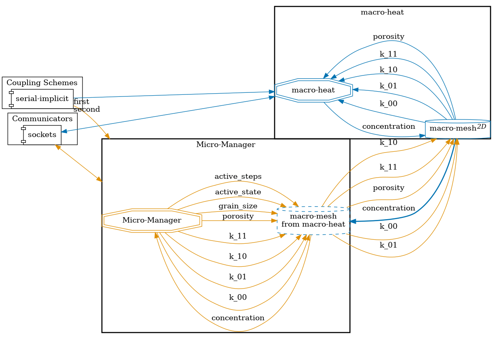

Setup
This tutorial solves a heat conduction problem on a 2D domain which has an underlying micro-structure. This micro-structure changes the constituent quantities necessary for solving the problem on the macro scale. This leads to a two-scale problem with one macro-scale simulation and several micro-scale simulations.

At each Gauss point of the macro domain there exists a micro simulation. The macro problem is one participant, which is coupled to many micro simulations. Each micro simulation is not an individual coupling participant, instead we use a managing software which controls all the micro simulations and their coupling via preCICE. The case is chosen from the first example case in the publication
Bastidas, Manuela & Bringedal, Carina & Pop, Iuliu Sorin (2021), A two-scale iterative scheme for a phase-field model for precipitation and dissolution in porous media. Applied Mathematics and Computation. 396. 125933. 10.1016/j.amc.2020.125933.
Configuration
preCICE configuration (image generated using the precice-config-visualizer):

Available solvers and dependencies
- Both the macro and micro simulations can be solved using the finite element library Nutils v7 or the simulation framework DuMux.
- While using Nutils, the macro simulation is written in Python, so it requires the Python bindings of preCICE.
- The Micro Manager controls all micro-simulations and facilitates coupling via preCICE. Use the develop branch of the Micro Manager.
DuMux setup
To solve either the macro or micro simulations with the DuMux framework, the necessary DUNE modules need to be downloaded and set up. This is done by running sh setup-dumux.sh in the tutorial folder.
Note that if an existing installation of DUNE modules is detected in a default location, this may lead to problems in running the setup-dumux.sh script. The environment variable DUNE_CONTROL_PATH is suppressed by the script.
Running the simulation
You can find the corresponding run.shscript for running the case in the folders corresponding to the solvers you want to use.
Run the macro problem:
cd macro-nutils
./run.sh
Check the Micro Manager configuration and running documentation to understand how to set it up and launch it. There is a Python script run-micro-problems.py in the tutorial directory to directly run the Micro Manager. This script imports the Micro Manager, and calls its solve() method. The Micro Manager can be run via this script in serial or parallel. Run it in serial:
cd micro-nutils
./run.sh -s
If you want to use DuMux, use cd macro-dumux instead of cd macro-nutils and/or cd micro-dumux instead of cd micro-nutils.
Running the simulation in parallel
All but the macro-nutils participant can be run in parallel. To run a participant in parallel, e.g. micro-nutils, run:
cd micro-nutils
./run.sh -p <num_procs>
The num_procs needs to fit the decomposition specified in the micro-manager-config.json (default: two ranks).
NOTE: When running micro-nutils, even though the case setup and involved physics is simple, each micro simulation is an instance of Nutils, which usually has a moderately high computation time. If the Micro Manager is run on 2 processors, the total runtime is approximately 10-15 minutes depending on the compute machine. Do not run the Micro Manager in serial, because the runtime will be several hours.
Running micro-dumux is much faster. A serial simulation takes approximately 2 minutes to finish.
Post-processing
Here are the results from Nutils-Nutils and DuMux-DuMux combination:
<img class=”img-responsive” src=”images/tutorials-two-scale-heat-conduction-results.png” alt=”Macro and micro data of macro-nutils - micro-nutils simulation” width=50% height=30%/>
<img class=”img-responsive” src=”images/tutorials-two-scale-heat-conduction-results-du-du.png” alt=”Macro and micro data of macro-dumux - micro-dumux simulation” width=50% height=30%/>
The differences of the fields are mainly introduced in by the different numerical schemes in the two solvers.
The participant macro-nutils outputs macro-*.vtk files which can be viewed in ParaView to see the macro concentration field. The Micro Manager uses the export functionality of preCICE to output micro simulation data and adaptivity related data to VTU files which can be viewed in ParaView. To view the data on each micro simulation, create a Glyph on the Micro Manager VTU data. In the figure above, micro-scale porosity is shown. For a lower concentration value, the porosity increases (in the lower left corner).
<img class=”img-responsive” src=”images/tutorials-two-scale-heat-conduction-evolving-micro-simulations.png” alt=”Adaptive mesh refinement in the micro simulation” width=50% height=30%/>
The micro simulations themselves have a circular micro structure which is resolved in every time step. To output VTK files for each micro simulation, uncomment the output() function in the file micro-nutils/micro.py. The figure above shows the changing phase field used to represent the circular micro structure and the diffuse interface width.
Similar to the output data files from simulation with Nutils, the VTU files from macro and micro solvers, that are written in DuMux, could also be rendered and inspected with ParaView with the mentioned method.